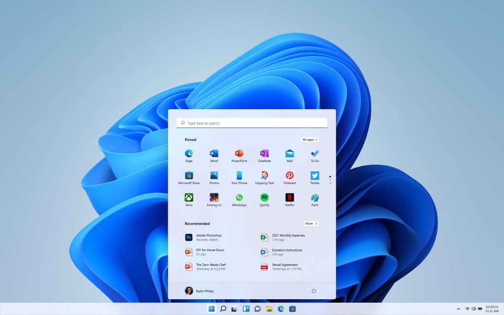

Cara Update Windows 11
Berikut cara untuk mendapatkan Windows 11 hari ini, jika memiliki PC Windows 10 atau perangkat yang diizinkan:
1. Periksa apakah PC Anda secara resmi didukung melalui aplikasi Pemeriksaan Kesehatan PC Microsoft.
2. Lakukan pencadangan atau back up semua dokumen, aplikasi, dan data penting Anda.
3. Pada PC Windows 10 Anda, buka Pengaturan> Perbarui & Keamanan> Pembaruan Windows.
4. Periksa apakah pembaruan tersedia
5. Jika pemutakhiran Windows 11 gratis tersedia, Anda akan melihat opsi untuk mengunduh dan menginstal.
6. Klik unduh dan instal.
7. Setelah instal dilakukan, ikuti petunjuk di layar dan konfigurasikan pengaturan Windows 11.
Jika pengguna tidak melihat ada pembaruan, namun PC yang dimiliki ternyata mendukung, maka bisa menggunakan Asisten Instalasi Baru Microsoft. Microsoft membawa sederet desain dan fitur baru pada sistem operasi tersebut.
"Desain dan suara baru yang modern, segar, bersih dan cantik, membawa Anda rasa tenang dan nyaman," tulis Microsoft dalam blog resminya, dikutip Jumat (1/10/2021).
Selain itu pada Start akan menampilkan banyak konten penggunanya. Microsoft menyebut Start menggunakan kekuatan dari cloud dan Microsoft 365 yang menunjukkan file terbaru dengan perangkat apapun pengguna melihatnya.
Microsoft Teams juga kebagian pengembangan pada Windows 11 ini. Chat dari platform akan terintegrasi dengan task bar dengan begitu akan lebih cepat untuk terhubung dengan pengguna lain.
Dari sisi Widget akan dipersonalisasi dengan menggunakan AI. "Menyediakan cara cepat mengakses informasi yang penting untuk Anda," kata Microsoft. "Dan dengan fitur performa, kecepatan, dan produktivitas kelas dunia di Microsoft Edge, Anda bisa menyelesaikan lebih banyak hal di web".